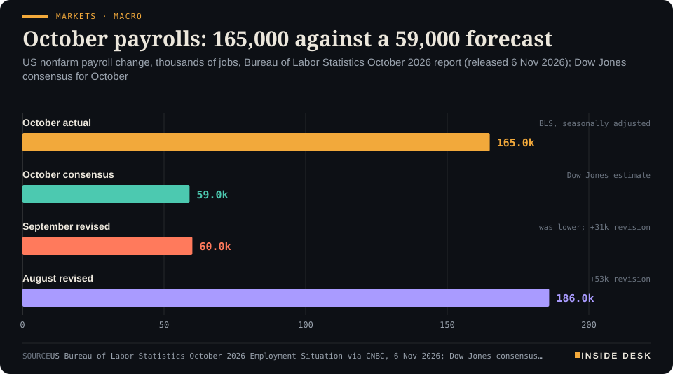
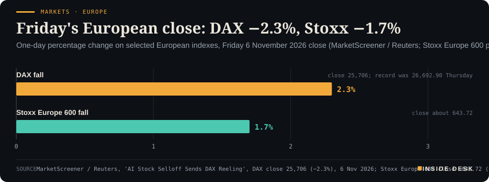

Inside Desk ePaper, Evening ePaper · Fri 6 Nov 2026
Friday, 6 November 2026Always free
Inside Desk
Evening ePaperPublished 17:30 CET · Berlin
Lead · Markets & Macro
October payrolls came in nearly three times the forecast. Europe still closed lower on AI-regulation fear after the midterms, even as US futures tried to steady.
October US payrolls beat forecasts by more than 100,000 jobs; Europe still closed lower on AI-regulation fear after the midterms. Elsewhere: Saturday's German power at €259.83, Brent near $97, flu-jab delays across Europe, England's drought maths, and another day of flight-hoax procedure.
October US payrolls beat forecasts by more than 100,000 jobs; Europe still closed lower on AI-regulation fear after the midterms. Elsewhere: Saturday's German power at €259.83, Brent near $97, flu-jab delays across Europe, England's drought maths, and another day of flight-hoax procedure.
11 edition pieces · 11 desks · Published 17:30 CET, 6 November 2026
24 ePaper extras, added , 6 November. They appear only in the ePaper and carry their own time.
17:30 Evening ePaper, updated live until 22:30 with an “Updated” time and a Latest page
Sun 10:00 The Sunday Magazine
Berlin time. Every issue is free.
How to read it
Swipe, use the arrow keys or the page strip. Tap any headline for the reading view. Press / to search, t for contents, +/− to zoom. Download the PDF.
LatestInside Desk · Evening ePaper6 November 2026
Latest
Live: this page and the issue are updated until 22:30 Berlin time.
Markets: Xetra closes DAX down 1.92% at 25,820, Stoxx 600 down 1% at 648.33, off the lows as Wall Street rebounds
LeadInside Desk · Evening ePaper6 November 2026
Markets & Macro · Lead · 2 min
October payrolls came in nearly three times the forecast. Europe still closed lower on AI-regulation fear after the midterms, even as US futures tried to steady.
The number arrived at 14:30 Berlin time, and it was not the sparse print the morning had prepared for. US nonfarm payrolls rose by 165,000 in October, against a Dow Jones consensus of about 59,000; the unemployment rate edged down to 4.1% from 4.2%1. Average hourly earnings rose 0.4% on the month and 3.1% over the year1. August was revised up by 53,000 to 186,000 and September by 31,000 to 60,0001. Desk arithmetic: the two revisions alone add 84,000 jobs that were not in last month’s picture.
Markets · MacroOctober payrolls: 165,000 against a 59,000 forecastUS nonfarm payroll change, thousands of jobs, Bureau of Labor Statistics October 2026 report (released 6 Nov 2026); Dow Jones consensus for October

Bar chart of US nonfarm payroll changes in thousands: October 2026 actual 165,000 against a Dow Jones consensus of 59,000; September revised to 60,000 and August revised to 186,000, per the Bureau of Labor Statistics as reported by CNBC on 6 November 2026.
Source: US Bureau of Labor Statistics October 2026 Employment Situation via CNBC, 6 Nov 2026; Dow Jones consensus cited by CNBC; retrieved 6 Nov 2026 · reported figures · CSV
What Europe did with Thursday’s fear. Before that print, and after it, Frankfurt had already priced a different story. The DAX closed at 25,706, down 2.3%, a day after its record high of 26,692.902. On the week it was still only about 0.3% lower2. The Stoxx Europe 600 was down about 1.7% near 643.72 by the close, wiping out the week’s earlier gains4. Chip and AI names had led the Asian overnight fall — Japan’s Nikkei about 6% lower at the close, South Korea’s Kospi down about 6% after an 8.8% plunge that tripped a halt — and Europe opened with the same argument3.
Markets · EuropeFriday's European close: DAX −2.3%, Stoxx −1.7%One-day percentage change on selected European indexes, Friday 6 November 2026 close (MarketScreener / Reuters; Stoxx Europe 600 per CloseLook)

Bar chart of Friday 6 November 2026 one-day percentage falls in Europe: Germany's DAX 2.3 percent to 25,706 points after Thursday's record 26,692.90, and the Stoxx Europe 600 about 1.7 percent to roughly 643.72, per MarketScreener/Reuters and CloseLook.
Source: MarketScreener / Reuters, 'AI Stock Selloff Sends DAX Reeling', DAX close 25,706 (−2.3%), 6 Nov 2026; Stoxx Europe 600 close ~643.72 (−1.70%) via CloseLook price history; retrieved 6 Nov 2026 · reported figures · CSV
The argument, plainly. Democrats’ midterm sweep revived traders’ fear that a Congress they do not control will slow data-centre construction and tighten AI rules3,4. About 40% of planned US data-centre capacity sits in states where governors or governors-elect have pledged or already imposed a pause, according to Cleanview as reported by Euronews3. That is a planning risk, not yet a statute. It was enough, on Thursday, for the Philadelphia Semiconductor Index to fall 12.2% — its worst day since 2020 — and for the Nasdaq to close down about 5.5% into a correction3. S&P 500 companies lost a record $2.9 trillion (€2.6 trillion) of market value in that session3.
What the jobs print does to the committees. Traders lifted the probability of a quarter-point Federal Reserve hike on 8–9 December to about 76.8% on the CME FedWatch tool1. Professional and business services added 70,000 jobs, healthcare 42,000, manufacturing 19,000 — broader than the healthcare-heavy pattern of 20251. Seema Shah of Principal Asset Management called it “a strong rebuttal to fears that the economy is heading into a meaningful slowdown”1. Long-term unemployment still rose, to 1.96 million people out of work for more than 27 weeks, the most since December 20211. Both facts can sit in the same report.
The constructive reading for you. A one-day liquidation prices a political guess; a payrolls table prices who got hired. Europe’s smaller tech weight cushioned the Stoxx relative to Asia and Wall Street4, which is why a 2.3% DAX day can still leave the week almost flat2. US futures in the European morning pointed to a pause in the sell-off, with Nasdaq-100 futures up about 1.5% at one point3. A pause is not a verdict. For you, the useful narrow habit is unchanged: read the BLS table and the closing index, not the loudest post about either. Nothing here is investment advice.
Geo-economicsInside Desk · Evening ePaper6 November 2026
Geo-economics · 2 min
Oil is down roughly 16% from Monday's peak above $110. Diplomacy and tanker attacks are priced in the same barrel.
Brent crude futures were about $96.93 a barrel by early US Friday, down 1.38% on the day after touching almost $100 earlier in the session; WTI was about $89.171. Since Monday’s peak above $110, Brent is down roughly 16%; WTI has fallen about 12% from levels above $1001. Helaba’s note, carried by Reuters, put North Sea Brent around $98.20 and WTI at $90.61 in the European morning2. The direction is clear even when the last tick moves.
Two stories in one price. Rapidan Energy Group’s Bob McNally told CNBC he sees an 80% probability that military fighting between the US and Iran resumes, and that both benchmarks could climb back above $1001. Against that, Iran has reportedly sent a nuclear proposal to Washington through Qatar, per a senior Iranian official cited by Reuters1. Iran also reported three further attacks on oil tankers in the Strait of Hormuz on Thursday, and UK Maritime Trade Operations data pointed to attacks continuing at a near-record rate1. Hopes for a midterm-driven diplomatic breakthrough and fear of renewed escalation are being marked in the same session.
A quieter German print. Destatis said seasonally and calendar-adjusted industrial production rose 0.7% in September from August, and 0.4% year on year; August’s monthly rise was revised down to 1.0% from 2.0%3. Auto production jumped 17.1% month on month while machinery fell 6.5% and construction 2.6%3. It is a rebound, not a boom, and it arrives on a day when oil is cheaper than Monday and dearer than summer.
For you, the household link is the pump and the heating bill, not the probability. A $13 weekly drop in Brent does not become €13 off a tank overnight; it does change what your supplier can buy next week. Nothing here is advice.
Geo-economics · Second story · ePaper extra, added
Destatis's September production print is a rebound after a revised softer August — useful, not exuberant.
Seasonally and calendar-adjusted industrial production in Germany rose 0.7% in September from August and 0.4% year on year, Destatis said1. August’s monthly rise was revised down to 1.0% from 2.0%1. Automotive production jumped 17.1% month on month; machinery fell 6.5% and construction 2.6%1.
A car-led bounce after a soft summer is the constructive reading. The machinery drop is the caution. Watch whether October orders keep the rebound from being a one-month spike.
Geo-economics · Brief · ePaper extra, added
Brent futures were about $96.93 early US Friday, down 1.38% on the day after nearly $100 earlier; the weekly peak was above $110 on Monday1. WTI was about $89.17, down 1.49%1. Rapidan’s Bob McNally put an 80% probability on fighting resuming and sees both benchmarks back above $100 if it does1. Iran’s reported nuclear proposal via Qatar is the counter-headline in the same tape1.
Markets & MacroInside Desk · Evening ePaper6 November 2026
Markets & Macro · Second story · ePaper extra, added
Asia transmitted Thursday's Nasdaq correction before Europe opened. Circuit breakers and bear-market labels arrived with the same overnight session.
Japan’s Nikkei 225 closed about 6% lower on Friday after deeper intraday losses; SoftBank fell about 11% and Kioxia about 8.7%1. South Korea’s Kospi closed down 6% after falling as much as 8.8%, enough to trigger a 20-minute trading halt; SK Hynix ended 10.4% lower and Samsung 6.4%1. Taiwan’s Taiex closed 4.5% down after an early drop of more than 8%; TSMC finished 4.7% lower after nearly 10% at the open1.
That is how a New York correction becomes a Tokyo morning: the same AI-regulation argument, a different opening bell. Europe’s smaller tech weight is why the Stoxx hurt less than Asia — not why the argument vanished.
Markets & Macro · Short item · ePaper extra, added
Thursday's session cut a record slice of S&P market value. The semiconductor index's 12.2% fall was the worst since 2020.
S&P 500 companies lost a record $2.9 trillion (€2.6 trillion) of market value on Thursday1. The Philadelphia Semiconductor Index fell 12.2%, its biggest one-day drop since 2020, and was about 16% lower for the week through Thursday’s close1. …
Markets & Macro · Short item · ePaper extra, added
This evening's Markets lead left Frankfurt near 25,706 and the Stoxx near 643. Xetra and the pan-European close settled higher than that trough, with insurance and Teleperformance still the sore spots.
The evening’s Markets lead left the DAX near 25,706, down about 2.3%, and the Stoxx Europe 600 near 643.72, down about 1.7%. …
Markets & Macro · Brief · ePaper extra, added
The civilian labour force rose by 421,000 in October and the participation rate edged up to 61.9%; the average workweek was unchanged at 34.4 hours1. The household survey showed 463,000 more people at work1. A growing labour force with falling unemployment is a different story from a shrinking one. It softens the “too few workers” narrative even as it hardens the case against an early Fed pause.
Politics & InstitutionsInside Desk · Evening ePaper6 November 2026
Politics & Institutions · 2 min
Democrats hold both chambers. The size of each majority is the story that continues after the map is called.
By Friday the shape of the next Congress was settled even where individual seats were not. CBS News estimated Democrats will hold at least 54 Senate seats and around 256 House seats in January1. The Guardian’s live tally had Democrats at 54 Senate seats (+7, including two independents who caucus with them) against 44 Republicans, with 33 of 35 races called; the House stood at 253 Democrats (+41) to 157 Republicans with 410 of 435 races called2. Reuters’ graphics desk put the House nearer 250–156 on Thursday afternoon Eastern time3.
What is still open. Senate races in Mississippi and Alaska and several dozen House seats remained unresolved on Friday1. In Mississippi, Democrat Scott Colom led by about 1,800 votes as counting continued; CBS called a Colom win one of the cycle’s biggest potential upsets1. Democrats have flipped more than 40 House districts so far, including seats once treated as deep red, while staving off losses from redistricting1.
Why the size matters to markets. Euronews and Reuters both framed Friday’s equity sell-off around the chance that a Democrat-led Congress will tighten AI and data-centre rules [see Markets]. A 54–44 Senate is a different legislative machine from a 51–49 one; a House majority above 250 is different from one that hangs on a handful of seats. The maps are largely drawn. The majorities are still being measured. For you, that is the week after election week: less theatre, more arithmetic.
Politics & Institutions · Second story · ePaper extra, added
The map is called; the margins of the majorities are not. Colom's lead in Mississippi is about 1,800 votes.
CBS estimates Democrats at at least 54 Senate seats and around 256 House seats in January1. The Guardian’s tally had 253–157 in the House with 410 of 435 races called, and 54–44 in the Senate with 33 of 35 called2. Mississippi’s Scott Colom (D) led by about 1,800 votes with counting ongoing; Alaska’s Senate race was also unresolved1. Democrats have flipped more than 40 House districts so far1. Majority size, not majority existence, is Friday’s political story.
President Trump wrote on Truth Social that the stock market “crashed today because the Dumocrats had a big Tuesday”1. Euronews noted FactSet’s label for the same session: the steepest daily percentage losses for the Nasdaq, S&P 500 and Dow since the April 2025 tariff shock1. Campaign rhetoric and a data vendor’s comparison are different genres; Friday’s payrolls table belongs to the second.
Psychology & BehaviourInside Desk · Evening ePaper6 November 2026
Psychology & Behaviour · 2 min
Cleanview's figure is about governors and governors-elect, not a federal ban. Behaviourally, a local 'no' travels farther than a national 'maybe'.
About 40% of planned US data-centre capacity is in states where governors or governors-elect have pledged or already imposed a pause on new projects, according to market intelligence firm Cleanview as reported by Euronews1. That number sat under Friday’s equity narrative alongside Thursday’s local scoreboard: voters rejected or restricted data-centre projects in 40 of 41 ballot measures counted around the midterms2.
What the figure is not. It is not a federal ban. It is not even, in every case, a signed order. A pledge on the campaign trail and a pause already in force are different legal objects, and Cleanview’s share mixes them1. Senator Bernie Sanders and Representative Alexandria Ocasio-Cortez proposed a federal moratorium earlier this year; a proposal is still a proposal1.
What it does to attention. Local ballots are concrete: a megawatt figure, a water permit, a town hall. National policy is abstract until a committee marks up a bill. Behavioural research on availability bias is useful here without being mystical: the vivid local “no” is easier to retrieve than the distant legislative calendar, so it weighs more in a Friday morning sell-off than a careful reading of statehouse procedure would justify. Markets can over-weight the vivid cue and still be right that politics has shifted; the error is treating a pledge share as a capacity haircut already delivered.
For you, the Annex’s habit is small. When a percentage like “40%” arrives attached to a scare, ask whether it measures law, pledge, or plan. The answer changes what the number can do.
Psychology & Behaviour · Short item · ePaper extra, added
A draft federal pause on data centres is not law. Thursday's semiconductor session treated the political direction as enough.
Senator Bernie Sanders and Representative Alexandria Ocasio-Cortez proposed a federal data-centre moratorium earlier this year1. A proposal needs committees, votes and a presidential signature. Markets priced the midterm shift toward that coalition on Thursday anyway, which is how political psychology meets a futures strip: direction first, statute later.
Susannah Streeter, chief investment strategist at Wealth Club, told Reuters the AI build-out has been “quite a chunk of US growth” via construction, manufacturing and elevated valuations that feed wealth perceptions1. Hit stock portfolios, she said, would drag consumer sentiment; she expects market volatility to persist until at least January, when Democratic AI policy may be clearer1. That is a behavioural channel — perceived wealth — sitting under an equity story.
Energy & IndustryInside Desk · Evening ePaper6 November 2026
Energy & Industry · 2 min
Friday's auction for Saturday delivery eased €15.81 from Friday's €275.64. The cheap hours are still dear by autumn standards.
The day-ahead auction for Saturday 7 November settled at a DE-LU base of €259.83 per megawatt hour, VoltWatch’s reading of the quarter-hour results shows1. That is €15.81 below Friday’s €275.64 delivery-day average on the SMARD series2. The Saturday range ran from €220.00 at 09:45 to €344.92 at 15:45, with no negative-price quarters1. France, the Netherlands and Belgium cleared within a euro of Germany on the base1.
Energy · PowerSaturday eases to €259.83, still far above SeptemberGermany/Luxembourg day-ahead electricity price, daily average by delivery day, € per MWh
Line chart of the daily average German-Luxembourg day-ahead electricity price from 1 September to 7 November 2026, in euros per megawatt hour. It falls to €30.12 on Saturday 24 October and €13.12 on Sunday 25 October during the storm, then climbs to €314.85 on Thursday 29 October. Friday 6 November averaged €275.64; the latest value is €259.83 for delivery on Saturday 7 November, still well above September's average near €145.
Source: Bundesnetzagentur | SMARD.de via VoltWatch day-ahead DE-LU averages, delivery days 1 Sep to 7 Nov 2026; Saturday 7 Nov base €259.83 (VoltWatch, stand 6 Nov 2026 ~13:00 CET); Friday 6 Nov €275.64 from prior SMARD series · CC BY 4.0 / reported open auction · CSV
The shape. Hours before dawn sit near €230–€250; the midday trough bottoms near €226 around 11:00; the evening block from 16:00 to 20:00 is back above €300, peaking near €325 in the hourly averages VoltWatch lists1. Desk arithmetic: Saturday’s base is still about 1.8 times September’s average of roughly €145 on the same SMARD series2. A softer Saturday is relief relative to Friday, not a return to early autumn.
For you. Most households do not pay the day-ahead price directly. If you are on a dynamic tariff, the least bad window on this curve is late morning into early afternoon; the 16:00–20:00 block is where a dishwasher or a car charger costs the most1. The auction publishes around noon every day. It remains one of the most useful free documents in the country. Nothing here is advice.
Energy & Industry · Second story · ePaper extra, added
The day-ahead shape is familiar: a late-morning dip, then a 16:00–20:00 hump. Dynamic tariffs live or die on that spread.
VoltWatch’s hourly averages for Saturday put the late-morning trough near €226/MWh around 11:00 and the evening block from 16:00 to 20:00 back above €300, with hours near €325 at 18:00–19:001. The quarter-hour extreme was €344.92 at 15:451. Desk arithmetic: the spread between the cheapest listed hour-average and the evening peak is roughly €100/MWh, or €0.10/kWh on the wholesale leg — the slot that matters if your tariff tracks the auction.
Energy & Industry · Brief · ePaper extra, added
Saturday bases: DE-LU €259.83, FR €258.75, NL €259.68, BE €259.581. Maxima differed more — Germany’s €344.92 against France’s €325.87 — but the daily averages show a coupled market under the same gas and residual-load weather1. A German story about expensive autumn power is, on this auction, a north-west European one.
Money, FX & CommitteesInside Desk · Evening ePaper6 November 2026
Money, FX & Committees · Podium vs Print · 2 min
The Fed left the door open after October. Friday's payrolls table pushed the market's December hike probability to about three in four.
Podium
“The period in front of us is information rich.”
Kevin Warsh, Chair of the Federal Reserve (as reported from the 28 Oct FOMC), Post-meeting press conference, 28 October 2026
Print76.8%
Odds of a quarter-point Federal Reserve hike at the 8–9 December meeting rose to 76.8% on the CME FedWatch tool after payrolls beat forecasts.
CME FedWatch, as reported by CNBC after the October jobs print, Friday 6 November 2026, after the 14:30 CET release
The podium. When the Federal Open Market Committee held rates at 3.75%–4.00% on 28 October, the vote was 10–2, with both dissenters preferring a 25-basis-point rise1. Chair Kevin Warsh stressed the inflation side of the dual mandate and described the stretch to the next meeting as “information rich” — in other words, December is live1. AIB’s weekly brief put the market’s December hike probability near 75% even before Friday’s data1. Across the Atlantic the Bank of England had already moved, lifting Bank Rate to 4% on Thursday and warning that the rise should not be read as the start of an inevitable sequence3.
The print. October nonfarm payrolls rose 165,000 against a consensus near 59,000; unemployment slipped to 4.1%; average hourly earnings rose 0.4% on the month2. CME FedWatch odds of a December quarter-point hike rose to 76.8% after the release2. Treasury yields moved higher across the curve as the print landed2. Desk arithmetic: 76.8% is roughly three-to-one on a hike, not a coin toss.
The gap. “Information rich” left room for a soft print to reopen the pause. A 165,000 print, with upward revisions of 84,000 to the prior two months, fills that room with evidence the labour market is still absorbing workers2. Long-term unemployment rising to its highest since late 2021 is the counter-weight inside the same table2. The market’s strip simply weights the upside surprise more heavily for December.
For you. If you have a dollar loan, a mortgage reset, or a savings rate tied to Fed funds, you are buying the strip’s number, not the chair’s adjective. The next scheduled decision is 9 December2. Nothing here is investment advice.
Money, FX & Committees · Second story · ePaper extra, added
The same BLS table fed both the hawkish December strip and a soft underbelly the Fed still has to weigh.
Average hourly earnings rose 0.4% on the month and 3.1% year on year in October, above the 0.3% / 2.9% estimates1. At the same time, people unemployed for more than 27 weeks rose to 1.96 million, the most since December 2021, and average unemployment duration jumped to 27.1 weeks1. A hot wage print and a cold long-term jobless print can share a release. December’s committee will have to say which one it trusts more for the next move.
Money, FX & Committees · Brief · ePaper extra, added
The Bank of England raised Bank Rate to 4% on Thursday, its first rise in more than three years, and said the increase should not be read as the start of an inevitable sequence1. The Federal Reserve meets 8–9 December; CME FedWatch odds of a quarter-point hike rose to 76.8% after Friday’s payrolls2. Sterling borrowers already have a new number; dollar borrowers still have a probability.
Ordinary & Inherited LifeInside Desk · Evening ePaper6 November 2026
Ordinary & Inherited Life · 2 min
The day-ahead base for Saturday is €259.83/MWh. That is not your household tariff — but it is the reference dynamic contracts follow.
Saturday’s German day-ahead base of €259.83 per megawatt hour is €0.260 per kilowatt-hour before taxes, levies and network charges1. Desk arithmetic: at that wholesale reference, 3,500 kWh a year of plain energy would be about €910; your household tariff adds everything the auction does not. Dynamic tariffs track the hourly curve: late morning into early afternoon on this Saturday print sits near €0.23/kWh wholesale, while the 16:00–20:00 block is above €0.301.
Fuel. Brent’s weekly fall from above $110 toward about $972 is the input German stations will eventually feel, not the price on the forecourt today. This morning’s early national averages on the federal price register still had Super E10 near €1.97 and diesel near €2.213. Desk arithmetic on those morning prints: a 50-litre tank of E10 is about €98.50; the same tank of diesel about €110.50. Early prints often firm after midday.
For you. Two columns, not one. Power: if you can shift a wash or a charge into the late-morning trough, the Saturday curve pays you in cents, not miracles1. Fuel: wait for next week’s station averages before declaring the oil move “passed through”. Nothing here is advice.
Ordinary & Inherited Life · Short item · ePaper extra, added
Early national pump prints before the usual midday firming. Brent's weekly drop has not fully landed on the forecourt.
Early Friday national averages on the federal price register put Super E10 near €1.97 a litre and diesel near €2.211. Desk arithmetic: 50 litres of E10 ≈ €98.50; 50 litres of diesel ≈ €110.50. Brent’s fall from above $110 toward $97 this week2 is the input, not yet the full pass-through. Check your station after midday before treating the morning print as the day’s price.
Ordinary & Inherited Life · Brief · ePaper extra, added
Saturday’s late-morning wholesale trough near €226/MWh against an evening block near €325/MWh is a gap of about €0.10/kWh1. Desk arithmetic: a 2 kWh cycle shifted into the trough saves roughly €0.20 before taxes and network charges, and only on a dynamic tariff. Small, real, and not a reason to rearrange a life — only a wash.
Tech & ComputeInside Desk · Evening ePaper6 November 2026
Tech & Compute · 2 min
Cleanview's state-level figure met Thursday's 12.2% semiconductor crash. Friday's European open priced the same political risk in smaller tech weights.
About 40% of planned US data-centre capacity is in states where governors or governors-elect have pledged or already imposed a pause on new projects, Cleanview told the market this week via Euronews1. That share sits beside a second number from Thursday: the Philadelphia Semiconductor Index fell 12.2%, its worst session since 2020, and was about 16% lower on the week through Thursday’s close1.
What Friday added. European tech struggled to bounce; Siemens Energy gained about 2.3% and ASMI about 2.7% in choppy trade, while the broader Stoxx still fell2. In the DAX, Infineon rose 2.4% and Aixtron 4.6% in the MDAX after both had lost more than 8% on Thursday3. Bloomberg reported, via Euronews, that Dutch bank ING is shopping a roughly $500 million (€447 million) portfolio of data-centre loans in one block1 — a credit-market echo of the equity story.
The politics underneath. Local midterm ballots went against data centres in 40 of 41 measures counted [see Psych]. A Democrat-led Congress raises the odds of federal scrutiny, including the Sanders–Ocasio-Cortez moratorium proposal1. Wealth Club’s Susannah Streeter told Reuters the AI build-out has been “quite a chunk of US growth” via construction, manufacturing and wealth effects, and that hit portfolios would drag consumer sentiment; she expects volatility at least until January clarity on Democratic AI policy2.
For you, the useful distinction is capacity planned versus capacity energised. A pause on new permits slows the former; the servers already ordered still need power, chips and credit. Nothing here is investment advice.
Tech & Compute · Second story · ePaper extra, added
A credit-desk echo of Thursday's equity story: the build-out's financing is being re-priced, not only its shares.
Dutch bank ING is putting up for sale a roughly $500 million (€447 million) portfolio of data-centre loans all at once, Bloomberg reported via Euronews, citing people familiar with the matter1. Selling a loan book in one block is how a credit desk marks a change in appetite. It does not cancel the servers already ordered; it does raise the cost of the next megawatt of planned capacity.
Tech & Compute · Brief · ePaper extra, added
Infineon was the DAX’s strongest name on Friday, up 2.4%; Aixtron gained 4.6% in the MDAX after both had lost more than 8% on Thursday1. Stabilisation after a crash is the first thing traders look for; lasting demand for AI silicon is the second. One session of green does not settle either.
Health & CareInside Desk · Evening ePaper6 November 2026
Health & Care · 2 min
All three vaccine strains were updated at once this season. Deliveries are promised for the weekend; demand is higher than usual.
Pharmacies across Luxembourg have received only about 70% of the flu-vaccine doses they ordered, Alain de Bourcy, president of the Luxembourg Pharmacists’ Association, told RTL on Friday1. Almost every pharmacy in the country is affected; Radio 100,7 first reported the gap on Friday morning1. De Bourcy blamed a change in this year’s vaccine composition for production delays, and said demand for jabs is higher than usual1. New deliveries are scheduled before or during the weekend, with sufficient stock expected by next week at the latest; he said there was “no cause for alarm”1.
The wider European pattern. Spain’s El Mundo reported that updating all three flu strains at once forced manufacturers to reformulate and slowed supply across Europe2. In Germany, the Pharmazeutische Zeitung noted that the Paul-Ehrlich-Institut began batch testing late, adding to the calendar squeeze3. UK contractors have also reported running out amid stock pressure this season [prior desk coverage]. The common thread is logistics after a full strain change, not a safety scare about the jab itself.
For you. If you still need a flu vaccination, ring the pharmacy before you travel; a 70% delivery rate means some shelves are empty even when the national story says “next week”1. People at higher risk should keep their appointment window open rather than assume walk-in stock. This is information, not medical advice.
Health & Care · Second story · ePaper extra, added
A full reformulation, not a safety scare, sits under Luxembourg's 70% delivery rate and similar gaps elsewhere.
Alain de Bourcy of Luxembourg’s pharmacists’ association tied the shortfall to a change in this year’s vaccine composition and higher-than-usual demand1. El Mundo reported that updating all three flu strains at once forced manufacturers across Europe to reformulate and slowed the line2. That is a production-calendar problem. Call ahead; the jab itself is not the scare.
Health & Care · Brief · ePaper extra, added
Germany’s Paul-Ehrlich-Institut began batch release testing of flu-vaccine lots later than usual this season, the Pharmazeutische Zeitung reported1. Batch release is a safety gate, not optional bureaucracy. When it starts late, pharmacies feel the gap even if manufacturers have filled vials. Watch next week’s release notices for when walk-in stock returns.
Security & OrderInside Desk · Evening ePaper6 November 2026
Security & Order · 2 min
Hoax bomb threats hit Bulgaria, Czechia, France, Italy, Hungary, Cyprus, Romania, the UK and Portugal. Searches found no explosives. Spain's foreign minister called it hybrid aggression.
A fresh wave of bomb threats disrupted at least 18 flights to or from Bulgaria, Czechia, France, Italy, Hungary, Cyprus, Romania, the UK and Portugal on Friday; the planes landed safely and searches found no explosive devices1. Danish police also investigated a threat against Copenhagen airport, which said it was operating normally1. The alerts followed Tuesday and Thursday waves that forced at least 35 flights to be diverted or searched1.
The arithmetic of disruption. Eurocontrol scheduled 26,709 flights in Europe on Friday; the affected services were 0.0674% of that total, the Guardian reported1. Hungary scrambled fighter jets three times to escort civilian flights, defence minister Romulusz Ruszin-Szendi said1. Knock-on delays mattered to passengers; they did not close the network.
Who and why, still open. Investigators have said there is no evidence so far that the hoaxes are orchestrated by a hostile terror group or state actor such as Russia or Iran, though inquiries continue1. Some Thursday threats were signed “fighters of the Male State”, a Russian far-right movement1. Spain’s foreign minister, José Manuel Albares, told TVE the pattern looked like “hybrid aggression” and “psychological warfare”1. Separately, Irish media newsrooms were evacuated after threats, and Sky in Britain reported a security threat to authorities1.
For you. If you fly this weekend, build slack for a possible diversion or secondary search; the probability for any one flight remains low1. Treat unsolicited threat messages as a matter for the airline and police, not for social media. Procedure — land, search, resume — is working. That is the constructive fact inside a frightening week.
Security & Order · Second story · ePaper extra, added
Escort sorties and office evacuations are the visible cost of a hoax campaign that has found no bombs.
Hungary’s defence minister said fighter jets scrambled three times on Friday to escort civilian flights through Hungarian airspace1. In Ireland, threats against media organisations disrupted broadcasts and prompted staff evacuations and police searches; Taoiseach Micheál Martin called it an effort to sow fear1. Sky in Britain also reported a security threat to the authorities1. Different targets, same method: cheap disruption that forces expensive procedure.
Security & Order · Brief · ePaper extra, added
José Manuel Albares told TVE it “cannot be mere coincidence” that so many incidents share the same modus operandi across Europe, calling the pattern an attempt at hybrid aggression and psychological warfare1. Investigators have said there is no evidence so far of orchestration by a hostile terror group or state such as Russia or Iran, while some Thursday threats were signed “fighters of the Male State”1. Both statements can stand until attribution hardens.
Climate & WeatherInside Desk · Evening ePaper6 November 2026
Climate & Weather · 2 min
Parts of the south-west and south-east are in severe drought after the driest April–September in over a century. Austen and Boelo wet the streets; they have not yet refilled the sponge.
Most of England and Wales are still in drought even after Storms Austen and Boelo, Regius Professor Hannah Cloke of the University of Reading wrote on Friday1. Parts of Cornwall, Devon, Dorset, Somerset and Sussex sit in severe drought — the Environment Agency’s highest level — after the driest April-to-September in southern and south-eastern England in more than 100 years1. Wimbleball reservoir on Exmoor, which supplies around 400,000 people, fell from full in March to about 13% by October1.
Why a wet week is not enough. Winter is when the UK refills: shorter, colder days mean less evaporation and less plant uptake, so rain can soak into groundwater1. The Environment Agency estimates England needs about 120% of normal rainfall between September and April for every area to leave drought1. Desk arithmetic: that is half a year of consistently wetter-than-normal weather, not two named storms. Heavy bursts overwhelm drains and floodplains quickly while reservoirs and chalk aquifers respond over months1. This is already England’s third drought in five years1.
Europe’s split map. Copernicus’s October bulletin on precipitation, soil moisture and river flow shows the broader continental contrast: dryness lingering in parts of central and eastern Europe while western and Mediterranean zones take storm hits2. COP31 opens in Antalya on 9 November with adaptation finance still the unresolved bill [prior desk]. For you in England, the calm habit is dull and useful: a water butt, a meter conversation with your supplier, shorter showers — and patience with a ledger that fills slowly1. Nothing here is advice beyond what the hydrology already says.
Climate & Weather · Second story · ePaper extra, added
One Exmoor reservoir that supplies roughly 400,000 people charts England's overdrawn water account.
Wimbleball reservoir on Exmoor was full in March after a wet winter, then fell to about 13% by October after southern England’s driest April–September in more than a century1. It supplies around 400,000 people1. Storms Austen and Boelo wet the roads; they have not yet refilled the sponge. The Environment Agency’s 120%-of-normal September–April target is the ledger that matters1.
Climate & Weather · Brief · ePaper extra, added
This is England’s third drought in five years, Hannah Cloke notes — stores barely have time to recover before the next dry spell begins1. Climate projections point to wetter UK winters on average, but heavier bursts that flood quickly and leave aquifers thirsty1. The constructive response is dull: fix leaks faster, harvest rain, and treat winter rain as a deposit, not a nuisance.
Charts and dataInside Desk · Evening ePaper6 November 2026
Charts and data
Energy · PowerSaturday eases to €259.83, still far above SeptemberGermany/Luxembourg day-ahead electricity price, daily average by delivery day, € per MWh
Line chart of the daily average German-Luxembourg day-ahead electricity price from 1 September to 7 November 2026, in euros per megawatt hour. It falls to €30.12 on Saturday 24 October and €13.12 on Sunday 25 October during the storm, then climbs to €314.85 on Thursday 29 October. Friday 6 November averaged €275.64; the latest value is €259.83 for delivery on Saturday 7 November, still well above September's average near €145.
Source: Bundesnetzagentur | SMARD.de via VoltWatch day-ahead DE-LU averages, delivery days 1 Sep to 7 Nov 2026; Saturday 7 Nov base €259.83 (VoltWatch, stand 6 Nov 2026 ~13:00 CET); Friday 6 Nov €275.64 from prior SMARD series · CC BY 4.0 / reported open auction · CSV
Latest values
Series
Value
Date
Chart
Day-ahead DE-LU
259.83
7 Nov 2026
Saturday eases to €259.83, still far above September
Last data point of each series in the charts above, from the Inside Desk data archive. Sources under each chart.
Back pageInside Desk · Evening ePaper6 November 2026
Before you close the tab
The day in one sentence
America hired faster than expected, Europe sold AI fear, and Saturday's German power eased but stayed expensive.
One thing you can do this week
When two loud numbers arrive on the same afternoon — today a jobs print and an index close — write both down before you refresh again. One labour figure and one price. The rest of the commentary can wait until those two lines are on paper.
A habit, not advice.
What went right
Germany's factories produced more in September than in August. Destatis put the seasonally and calendar-adjusted rise at 0.7% month on month and 0.4% year on year, with car plants jumping 17.1% after a soft summer 1. A single month does not repair a hard year; it does show the production line can still accelerate when orders and parts allow.
In euros at home
Saturday's day-ahead power base is €259.83 per megawatt hour, or about €0.260 per kilowatt-hour before taxes and network charges 2. Desk arithmetic: shifting a 2 kWh dishwasher cycle from the €0.325 evening block into the €0.226 late-morning trough saves roughly €0.20 on the wholesale leg alone — cents, not a holiday, and only if you are on a dynamic tariff that tracks the auction 2. Brent's weekly drop from above $110 toward about $97 is the input your fuel supplier will eventually feel 3.
Desk arithmetic on cited wholesale averages. Your household tariff and station prices differ. Nothing here is advice.
Small words
Nonfarm payrolls
The US Bureau of Labor Statistics monthly count of jobs outside farming, seasonally adjusted 4. Today's print said employers added 165,000 such jobs in October, against a Wall Street guess near 59,000 4. It is the single labour number the Federal Reserve watches most closely, which is why a surprise this large moved December rate-hike odds within minutes.
Commentary for information only. Not investment, legal, tax, medical or political advice. Inside Desk is free and reader-supported. Every number is sourced in the piece it appears in.
This issue has been updated.
All articles in this edition
Markets & Macro · 2 min read
165,000 jobs, a 2.3% DAX drop, and a pause that is not yet a recovery
October payrolls came in nearly three times the forecast. Europe still closed lower on AI-regulation fear after the midterms, even as US futures tried to steady.
The number arrived at 14:30 Berlin time, and it was not the sparse print the morning had prepared for. US nonfarm payrolls rose by 165,000 in October, against a Dow Jones consensus of about 59,000; the unemployment rate edged down to 4.1% from 4.2%1. Average hourly earnings rose 0.4% on the month and 3.1% over the year1. August was revised up by 53,000 to 186,000 and September by 31,000 to 60,0001. Desk arithmetic: the two revisions alone add 84,000 jobs that were not in last month’s picture.
Markets · MacroOctober payrolls: 165,000 against a 59,000 forecastUS nonfarm payroll change, thousands of jobs, Bureau of Labor Statistics October 2026 report (released 6 Nov 2026); Dow Jones consensus for October
Bar chart of US nonfarm payroll changes in thousands: October 2026 actual 165,000 against a Dow Jones consensus of 59,000; September revised to 60,000 and August revised to 186,000, per the Bureau of Labor Statistics as reported by CNBC on 6 November 2026.
Source: US Bureau of Labor Statistics October 2026 Employment Situation via CNBC, 6 Nov 2026; Dow Jones consensus cited by CNBC; retrieved 6 Nov 2026 · reported figures · CSV
What Europe did with Thursday’s fear. Before that print, and after it, Frankfurt had already priced a different story. The DAX closed at 25,706, down 2.3%, a day after its record high of 26,692.902. On the week it was still only about 0.3% lower2. The Stoxx Europe 600 was down about 1.7% near 643.72 by the close, wiping out the week’s earlier gains4. Chip and AI names had led the Asian overnight fall — Japan’s Nikkei about 6% lower at the close, South Korea’s Kospi down about 6% after an 8.8% plunge that tripped a halt — and Europe opened with the same argument3.
Markets · EuropeFriday's European close: DAX −2.3%, Stoxx −1.7%One-day percentage change on selected European indexes, Friday 6 November 2026 close (MarketScreener / Reuters; Stoxx Europe 600 per CloseLook)
Bar chart of Friday 6 November 2026 one-day percentage falls in Europe: Germany's DAX 2.3 percent to 25,706 points after Thursday's record 26,692.90, and the Stoxx Europe 600 about 1.7 percent to roughly 643.72, per MarketScreener/Reuters and CloseLook.
Source: MarketScreener / Reuters, 'AI Stock Selloff Sends DAX Reeling', DAX close 25,706 (−2.3%), 6 Nov 2026; Stoxx Europe 600 close ~643.72 (−1.70%) via CloseLook price history; retrieved 6 Nov 2026 · reported figures · CSV
The argument, plainly. Democrats’ midterm sweep revived traders’ fear that a Congress they do not control will slow data-centre construction and tighten AI rules3,4. About 40% of planned US data-centre capacity sits in states where governors or governors-elect have pledged or already imposed a pause, according to Cleanview as reported by Euronews3. That is a planning risk, not yet a statute. It was enough, on Thursday, for the Philadelphia Semiconductor Index to fall 12.2% — its worst day since 2020 — and for the Nasdaq to close down about 5.5% into a correction3. S&P 500 companies lost a record $2.9 trillion (€2.6 trillion) of market value in that session3.
What the jobs print does to the committees. Traders lifted the probability of a quarter-point Federal Reserve hike on 8–9 December to about 76.8% on the CME FedWatch tool1. Professional and business services added 70,000 jobs, healthcare 42,000, manufacturing 19,000 — broader than the healthcare-heavy pattern of 20251. Seema Shah of Principal Asset Management called it “a strong rebuttal to fears that the economy is heading into a meaningful slowdown”1. Long-term unemployment still rose, to 1.96 million people out of work for more than 27 weeks, the most since December 20211. Both facts can sit in the same report.
The constructive reading for you. A one-day liquidation prices a political guess; a payrolls table prices who got hired. Europe’s smaller tech weight cushioned the Stoxx relative to Asia and Wall Street4, which is why a 2.3% DAX day can still leave the week almost flat2. US futures in the European morning pointed to a pause in the sell-off, with Nasdaq-100 futures up about 1.5% at one point3. A pause is not a verdict. For you, the useful narrow habit is unchanged: read the BLS table and the closing index, not the loudest post about either. Nothing here is investment advice.
Desk comment A strong labour market and a scared equity market can share the same afternoon. The committees read both.
Brent near $97, and an 80% guess about whether the fighting resumes
Oil is down roughly 16% from Monday's peak above $110. Diplomacy and tanker attacks are priced in the same barrel.
Brent crude futures were about $96.93 a barrel by early US Friday, down 1.38% on the day after touching almost $100 earlier in the session; WTI was about $89.171. Since Monday’s peak above $110, Brent is down roughly 16%; WTI has fallen about 12% from levels above $1001. Helaba’s note, carried by Reuters, put North Sea Brent around $98.20 and WTI at $90.61 in the European morning2. The direction is clear even when the last tick moves.
Two stories in one price. Rapidan Energy Group’s Bob McNally told CNBC he sees an 80% probability that military fighting between the US and Iran resumes, and that both benchmarks could climb back above $1001. Against that, Iran has reportedly sent a nuclear proposal to Washington through Qatar, per a senior Iranian official cited by Reuters1. Iran also reported three further attacks on oil tankers in the Strait of Hormuz on Thursday, and UK Maritime Trade Operations data pointed to attacks continuing at a near-record rate1. Hopes for a midterm-driven diplomatic breakthrough and fear of renewed escalation are being marked in the same session.
A quieter German print. Destatis said seasonally and calendar-adjusted industrial production rose 0.7% in September from August, and 0.4% year on year; August’s monthly rise was revised down to 1.0% from 2.0%3. Auto production jumped 17.1% month on month while machinery fell 6.5% and construction 2.6%3. It is a rebound, not a boom, and it arrives on a day when oil is cheaper than Monday and dearer than summer.
For you, the household link is the pump and the heating bill, not the probability. A $13 weekly drop in Brent does not become €13 off a tank overnight; it does change what your supplier can buy next week. Nothing here is advice.
Desk comment A weekly oil chart can fall while a strategist's probability stays high. Both are readings of the same unfinished negotiation.
Geo-economics · Second story · ePaper extra, added
German factories +0.7%, cars +17.1%, machinery −6.5%
Destatis's September production print is a rebound after a revised softer August — useful, not exuberant.
Seasonally and calendar-adjusted industrial production in Germany rose 0.7% in September from August and 0.4% year on year, Destatis said1. August’s monthly rise was revised down to 1.0% from 2.0%1. Automotive production jumped 17.1% month on month; machinery fell 6.5% and construction 2.6%1.
A car-led bounce after a soft summer is the constructive reading. The machinery drop is the caution. Watch whether October orders keep the rebound from being a one-month spike.
Appears only in the ePaper · Commentary for information only. Not advice.
Geo-economics · Brief · ePaper extra, added
Brent down about 16% on the week, from above $110 toward $97
Midterm diplomacy hopes cut the risk premium; Hormuz attacks and an 80% resume-fighting guess put some of it back.
Brent futures were about $96.93 early US Friday, down 1.38% on the day after nearly $100 earlier; the weekly peak was above $110 on Monday1. WTI was about $89.17, down 1.49%1. Rapidan’s Bob McNally put an 80% probability on fighting resuming and sees both benchmarks back above $100 if it does1. Iran’s reported nuclear proposal via Qatar is the counter-headline in the same tape1.
Appears only in the ePaper · Commentary for information only. Not advice.
Markets & Macro · Second story · ePaper extra, added
Nikkei down 6%, Kospi trips a halt, and TSMC's early 10% draw
Asia transmitted Thursday's Nasdaq correction before Europe opened. Circuit breakers and bear-market labels arrived with the same overnight session.
Japan’s Nikkei 225 closed about 6% lower on Friday after deeper intraday losses; SoftBank fell about 11% and Kioxia about 8.7%1. South Korea’s Kospi closed down 6% after falling as much as 8.8%, enough to trigger a 20-minute trading halt; SK Hynix ended 10.4% lower and Samsung 6.4%1. Taiwan’s Taiex closed 4.5% down after an early drop of more than 8%; TSMC finished 4.7% lower after nearly 10% at the open1.
That is how a New York correction becomes a Tokyo morning: the same AI-regulation argument, a different opening bell. Europe’s smaller tech weight is why the Stoxx hurt less than Asia — not why the argument vanished.
Appears only in the ePaper · Commentary for information only. Not advice.
Markets & Macro · Short item · ePaper extra, added
$2.9 trillion off the S&P in a day, and Huang $15bn lighter
Thursday's session cut a record slice of S&P market value. The semiconductor index's 12.2% fall was the worst since 2020.
S&P 500 companies lost a record $2.9 trillion (€2.6 trillion) of market value on Thursday1. The Philadelphia Semiconductor Index fell 12.2%, its biggest one-day drop since 2020, and was about 16% lower for the week through Thursday’s close1. Nvidia CEO Jensen Huang’s net worth fell $15.1bn (€13.5bn) on the Bloomberg Billionaires Index; Elon Musk’s fell $79.7bn (€71bn)1.
A record dollar loss is not a prediction. It is a measure of how concentrated the prior gains were in the names that led the fall. Friday’s European close and the US open test whether that concentration is still being sold.
Appears only in the ePaper · Commentary for information only. Not advice.
Markets & Macro · Short item · ePaper extra, added
DAX closes down 1.92%, Stoxx 600 down 1%, off the lows as Wall Street rebounds
This evening's Markets lead left Frankfurt near 25,706 and the Stoxx near 643. Xetra and the pan-European close settled higher than that trough, with insurance and Teleperformance still the sore spots.
The evening’s Markets lead left the DAX near 25,706, down about 2.3%, and the Stoxx Europe 600 near 643.72, down about 1.7%. Xetra has since closed the DAX 1.92% lower at 25,820.36, and the Stoxx 600 settled 1% lower at 648.33 — red, but clearly off those earlier troughs as Wall Street’s chip rebound bled into the European afternoon1,2,3. The CAC 40 finished 0.8% lower at 8,139.00; the FTSE 100 closed about 1% lower at 10,673.94; the EuroStoxx 50 fell 0.98% to 6,170.492,4. The MDax closed 0.81% lower at 30,642.231. On the week the DAX gave back its interim gain; the Stoxx still eked out a small advance1,3.
Inside the day the sorting held. Insurance led the Stoxx lower, down 2.6%, after a JPMorgan downgrade of German reinsurers: Munich Re fell about 4.3%, Hannover Re about 4.4%, Swiss Re 4.6%1,3. Teleperformance was the Stoxx’s biggest faller, down 15.3% after cutting its full-year revenue-growth outlook2,3. Rheinmetall closed 3.4% lower at €812.70 on fresh target cuts after its warning1. Travel was the only Stoxx sector up, rising 0.9% with help from IAG3,4. Chip-equipment names recovered with New York: ASML closed about 2.7% higher, and Sharecast noted BE Semiconductor and Aixtron ended in the black after earlier heavy losses2,4. Hochtief jumped 5.5% on reports ACS may bid for the rest of the German builder1.
dpa-AFX’s Nicklas Wolf put CapTrader’s Timo Emden on the point: relief at a clear midterm result on one side, fear that stricter AI rules become a growth brake on the other1. Saxo Bank’s Ruben Dalfovo told Reuters the market was “selling first and asking questions later” while company fundamentals had not changed3. A trough in the afternoon and a less-red close by the bell is a mood swing, not a ledger. Wall Street is still open as Europe packs up; that verdict belongs to tonight’s US close. Nothing here is investment advice.
Appears only in the ePaper · Commentary for information only. Not advice.
Markets & Macro · Brief · ePaper extra, added
Labour force +421,000, participation 61.9%, workweek flat at 34.4
Beneath the payroll headline, the household survey showed people returning to the labour market.
The civilian labour force rose by 421,000 in October and the participation rate edged up to 61.9%; the average workweek was unchanged at 34.4 hours1. The household survey showed 463,000 more people at work1. A growing labour force with falling unemployment is a different story from a shrinking one. It softens the “too few workers” narrative even as it hardens the case against an early Fed pause.
Appears only in the ePaper · Commentary for information only. Not advice.
Politics & Institutions · 2 min read
Fifty-four Senate seats, and a House majority still being counted
Democrats hold both chambers. The size of each majority is the story that continues after the map is called.
By Friday the shape of the next Congress was settled even where individual seats were not. CBS News estimated Democrats will hold at least 54 Senate seats and around 256 House seats in January1. The Guardian’s live tally had Democrats at 54 Senate seats (+7, including two independents who caucus with them) against 44 Republicans, with 33 of 35 races called; the House stood at 253 Democrats (+41) to 157 Republicans with 410 of 435 races called2. Reuters’ graphics desk put the House nearer 250–156 on Thursday afternoon Eastern time3.
What is still open. Senate races in Mississippi and Alaska and several dozen House seats remained unresolved on Friday1. In Mississippi, Democrat Scott Colom led by about 1,800 votes as counting continued; CBS called a Colom win one of the cycle’s biggest potential upsets1. Democrats have flipped more than 40 House districts so far, including seats once treated as deep red, while staving off losses from redistricting1.
Why the size matters to markets. Euronews and Reuters both framed Friday’s equity sell-off around the chance that a Democrat-led Congress will tighten AI and data-centre rules [see Markets]. A 54–44 Senate is a different legislative machine from a 51–49 one; a House majority above 250 is different from one that hangs on a handful of seats. The maps are largely drawn. The majorities are still being measured. For you, that is the week after election week: less theatre, more arithmetic.
Desk comment A majority is a number you can count. A working majority is a number that survives the first procedural vote.
Politics & Institutions · Second story · ePaper extra, added
Mississippi and Alaska still counting, and 40-plus House flips already
The map is called; the margins of the majorities are not. Colom's lead in Mississippi is about 1,800 votes.
CBS estimates Democrats at at least 54 Senate seats and around 256 House seats in January1. The Guardian’s tally had 253–157 in the House with 410 of 435 races called, and 54–44 in the Senate with 33 of 35 called2. Mississippi’s Scott Colom (D) led by about 1,800 votes with counting ongoing; Alaska’s Senate race was also unresolved1. Democrats have flipped more than 40 House districts so far1. Majority size, not majority existence, is Friday’s political story.
Trump blames "Dumocrats" for the crash; FactSet called it the worst since April 2025
A Truth Social post met a quieter data desk. Both are now part of the week's record.
President Trump wrote on Truth Social that the stock market “crashed today because the Dumocrats had a big Tuesday”1. Euronews noted FactSet’s label for the same session: the steepest daily percentage losses for the Nasdaq, S&P 500 and Dow since the April 2025 tariff shock1. Campaign rhetoric and a data vendor’s comparison are different genres; Friday’s payrolls table belongs to the second.
Appears only in the ePaper · Commentary for information only. Not advice.
Psychology & Behaviour · 2 min read
The Annex: 40% of planned capacity sits under a pause pledge — and why a ballot feels like a veto
Cleanview's figure is about governors and governors-elect, not a federal ban. Behaviourally, a local 'no' travels farther than a national 'maybe'.
About 40% of planned US data-centre capacity is in states where governors or governors-elect have pledged or already imposed a pause on new projects, according to market intelligence firm Cleanview as reported by Euronews1. That number sat under Friday’s equity narrative alongside Thursday’s local scoreboard: voters rejected or restricted data-centre projects in 40 of 41 ballot measures counted around the midterms2.
What the figure is not. It is not a federal ban. It is not even, in every case, a signed order. A pledge on the campaign trail and a pause already in force are different legal objects, and Cleanview’s share mixes them1. Senator Bernie Sanders and Representative Alexandria Ocasio-Cortez proposed a federal moratorium earlier this year; a proposal is still a proposal1.
What it does to attention. Local ballots are concrete: a megawatt figure, a water permit, a town hall. National policy is abstract until a committee marks up a bill. Behavioural research on availability bias is useful here without being mystical: the vivid local “no” is easier to retrieve than the distant legislative calendar, so it weighs more in a Friday morning sell-off than a careful reading of statehouse procedure would justify. Markets can over-weight the vivid cue and still be right that politics has shifted; the error is treating a pledge share as a capacity haircut already delivered.
For you, the Annex’s habit is small. When a percentage like “40%” arrives attached to a scare, ask whether it measures law, pledge, or plan. The answer changes what the number can do.
Desk comment People treat a local vote as a finished sentence. Markets treat it as the first clause of a longer one.
Psychology & Behaviour · Short item · ePaper extra, added
Sanders–Ocasio-Cortez moratorium: still a proposal, already a price
A draft federal pause on data centres is not law. Thursday's semiconductor session treated the political direction as enough.
Senator Bernie Sanders and Representative Alexandria Ocasio-Cortez proposed a federal data-centre moratorium earlier this year1. A proposal needs committees, votes and a presidential signature. Markets priced the midterm shift toward that coalition on Thursday anyway, which is how political psychology meets a futures strip: direction first, statute later.
Streeter: expect AI-policy volatility until January clarity
Wealth Club's strategist tied household sentiment to portfolio hits from the AI complex — a wealth-effect read of the same sell-off.
Susannah Streeter, chief investment strategist at Wealth Club, told Reuters the AI build-out has been “quite a chunk of US growth” via construction, manufacturing and elevated valuations that feed wealth perceptions1. Hit stock portfolios, she said, would drag consumer sentiment; she expects market volatility to persist until at least January, when Democratic AI policy may be clearer1. That is a behavioural channel — perceived wealth — sitting under an equity story.
Appears only in the ePaper · Commentary for information only. Not advice.
Energy & Industry · 2 min read
€259.83 for Saturday, and a floor still above September's average day
Friday's auction for Saturday delivery eased €15.81 from Friday's €275.64. The cheap hours are still dear by autumn standards.
The day-ahead auction for Saturday 7 November settled at a DE-LU base of €259.83 per megawatt hour, VoltWatch’s reading of the quarter-hour results shows1. That is €15.81 below Friday’s €275.64 delivery-day average on the SMARD series2. The Saturday range ran from €220.00 at 09:45 to €344.92 at 15:45, with no negative-price quarters1. France, the Netherlands and Belgium cleared within a euro of Germany on the base1.
Energy · PowerSaturday eases to €259.83, still far above SeptemberGermany/Luxembourg day-ahead electricity price, daily average by delivery day, € per MWh
Line chart of the daily average German-Luxembourg day-ahead electricity price from 1 September to 7 November 2026, in euros per megawatt hour. It falls to €30.12 on Saturday 24 October and €13.12 on Sunday 25 October during the storm, then climbs to €314.85 on Thursday 29 October. Friday 6 November averaged €275.64; the latest value is €259.83 for delivery on Saturday 7 November, still well above September's average near €145.
Source: Bundesnetzagentur | SMARD.de via VoltWatch day-ahead DE-LU averages, delivery days 1 Sep to 7 Nov 2026; Saturday 7 Nov base €259.83 (VoltWatch, stand 6 Nov 2026 ~13:00 CET); Friday 6 Nov €275.64 from prior SMARD series · CC BY 4.0 / reported open auction · CSV
The shape. Hours before dawn sit near €230–€250; the midday trough bottoms near €226 around 11:00; the evening block from 16:00 to 20:00 is back above €300, peaking near €325 in the hourly averages VoltWatch lists1. Desk arithmetic: Saturday’s base is still about 1.8 times September’s average of roughly €145 on the same SMARD series2. A softer Saturday is relief relative to Friday, not a return to early autumn.
For you. Most households do not pay the day-ahead price directly. If you are on a dynamic tariff, the least bad window on this curve is late morning into early afternoon; the 16:00–20:00 block is where a dishwasher or a car charger costs the most1. The auction publishes around noon every day. It remains one of the most useful free documents in the country. Nothing here is advice.
Desk comment A Saturday that is cheaper than Friday can still be expensive for the year. The floor is the news that lasts.
Energy & Industry · Second story · ePaper extra, added
Saturday's evening block above €300, trough near €226
The day-ahead shape is familiar: a late-morning dip, then a 16:00–20:00 hump. Dynamic tariffs live or die on that spread.
VoltWatch’s hourly averages for Saturday put the late-morning trough near €226/MWh around 11:00 and the evening block from 16:00 to 20:00 back above €300, with hours near €325 at 18:00–19:001. The quarter-hour extreme was €344.92 at 15:451. Desk arithmetic: the spread between the cheapest listed hour-average and the evening peak is roughly €100/MWh, or €0.10/kWh on the wholesale leg — the slot that matters if your tariff tracks the auction.
Appears only in the ePaper · Commentary for information only. Not advice.
Energy & Industry · Brief · ePaper extra, added
France, NL and Belgium within a euro of Germany's Saturday base
Coupled day-ahead markets cleared almost together. The scarcity is regional, not only German.
Saturday bases: DE-LU €259.83, FR €258.75, NL €259.68, BE €259.581. Maxima differed more — Germany’s €344.92 against France’s €325.87 — but the daily averages show a coupled market under the same gas and residual-load weather1. A German story about expensive autumn power is, on this auction, a north-west European one.
Appears only in the ePaper · Commentary for information only. Not advice.
Money, FX & Committees · 2 min read
Podium vs Print: "information rich" and 76.8% for December
The Fed left the door open after October. Friday's payrolls table pushed the market's December hike probability to about three in four.
Podium
“The period in front of us is information rich.”
Kevin Warsh, Chair of the Federal Reserve (as reported from the 28 Oct FOMC), Post-meeting press conference, 28 October 2026
Print76.8%
Odds of a quarter-point Federal Reserve hike at the 8–9 December meeting rose to 76.8% on the CME FedWatch tool after payrolls beat forecasts.
CME FedWatch, as reported by CNBC after the October jobs print, Friday 6 November 2026, after the 14:30 CET release
The podium. When the Federal Open Market Committee held rates at 3.75%–4.00% on 28 October, the vote was 10–2, with both dissenters preferring a 25-basis-point rise1. Chair Kevin Warsh stressed the inflation side of the dual mandate and described the stretch to the next meeting as “information rich” — in other words, December is live1. AIB’s weekly brief put the market’s December hike probability near 75% even before Friday’s data1. Across the Atlantic the Bank of England had already moved, lifting Bank Rate to 4% on Thursday and warning that the rise should not be read as the start of an inevitable sequence3.
The print. October nonfarm payrolls rose 165,000 against a consensus near 59,000; unemployment slipped to 4.1%; average hourly earnings rose 0.4% on the month2. CME FedWatch odds of a December quarter-point hike rose to 76.8% after the release2. Treasury yields moved higher across the curve as the print landed2. Desk arithmetic: 76.8% is roughly three-to-one on a hike, not a coin toss.
The gap. “Information rich” left room for a soft print to reopen the pause. A 165,000 print, with upward revisions of 84,000 to the prior two months, fills that room with evidence the labour market is still absorbing workers2. Long-term unemployment rising to its highest since late 2021 is the counter-weight inside the same table2. The market’s strip simply weights the upside surprise more heavily for December.
For you. If you have a dollar loan, a mortgage reset, or a savings rate tied to Fed funds, you are buying the strip’s number, not the chair’s adjective. The next scheduled decision is 9 December2. Nothing here is investment advice.
Desk comment A chair speaks in weather. A futures strip speaks in percent. Friday's table turned the weather into a number.
Money, FX & Committees · Second story · ePaper extra, added
Earnings +0.4%, and 1.96 million long-term unemployed
The same BLS table fed both the hawkish December strip and a soft underbelly the Fed still has to weigh.
Average hourly earnings rose 0.4% on the month and 3.1% year on year in October, above the 0.3% / 2.9% estimates1. At the same time, people unemployed for more than 27 weeks rose to 1.96 million, the most since December 2021, and average unemployment duration jumped to 27.1 weeks1. A hot wage print and a cold long-term jobless print can share a release. December’s committee will have to say which one it trusts more for the next move.
Appears only in the ePaper · Commentary for information only. Not advice.
Money, FX & Committees · Brief · ePaper extra, added
BoE already at 4%; the Fed is still deciding in December
Two Atlantic committees, one week: London moved on Thursday; Washington left December live and Friday's data nudged the odds up.
The Bank of England raised Bank Rate to 4% on Thursday, its first rise in more than three years, and said the increase should not be read as the start of an inevitable sequence1. The Federal Reserve meets 8–9 December; CME FedWatch odds of a quarter-point hike rose to 76.8% after Friday’s payrolls2. Sterling borrowers already have a new number; dollar borrowers still have a probability.
Appears only in the ePaper · Commentary for information only. Not advice.
Ordinary & Inherited Life · 2 min read
Ordinary Ledger: Saturday power at €0.260 a kilowatt-hour wholesale, and a tank that still tracks Brent
The day-ahead base for Saturday is €259.83/MWh. That is not your household tariff — but it is the reference dynamic contracts follow.
Saturday’s German day-ahead base of €259.83 per megawatt hour is €0.260 per kilowatt-hour before taxes, levies and network charges1. Desk arithmetic: at that wholesale reference, 3,500 kWh a year of plain energy would be about €910; your household tariff adds everything the auction does not. Dynamic tariffs track the hourly curve: late morning into early afternoon on this Saturday print sits near €0.23/kWh wholesale, while the 16:00–20:00 block is above €0.301.
Fuel. Brent’s weekly fall from above $110 toward about $972 is the input German stations will eventually feel, not the price on the forecourt today. This morning’s early national averages on the federal price register still had Super E10 near €1.97 and diesel near €2.213. Desk arithmetic on those morning prints: a 50-litre tank of E10 is about €98.50; the same tank of diesel about €110.50. Early prints often firm after midday.
For you. Two columns, not one. Power: if you can shift a wash or a charge into the late-morning trough, the Saturday curve pays you in cents, not miracles1. Fuel: wait for next week’s station averages before declaring the oil move “passed through”. Nothing here is advice.
Desk comment Wholesale is a reference. Your bill is a contract. Keep them in separate columns.
Ordinary & Inherited Life · Short item · ePaper extra, added
A 50-litre tank at this morning's E10 average: about €98.50
Early national pump prints before the usual midday firming. Brent's weekly drop has not fully landed on the forecourt.
Early Friday national averages on the federal price register put Super E10 near €1.97 a litre and diesel near €2.211. Desk arithmetic: 50 litres of E10 ≈ €98.50; 50 litres of diesel ≈ €110.50. Brent’s fall from above $110 toward $97 this week2 is the input, not yet the full pass-through. Check your station after midday before treating the morning print as the day’s price.
Sources
Spritpreise heute — kraftstoffbilliger.de (MTS-K), 6 Nov 2026 morning
Appears only in the ePaper · Commentary for information only. Not advice.
Ordinary & Inherited Life · Brief · ePaper extra, added
A dishwasher in the trough saves cents, not a holiday
On Saturday's curve, moving 2 kWh from the evening hump into late morning is about €0.20 on the wholesale leg.
Saturday’s late-morning wholesale trough near €226/MWh against an evening block near €325/MWh is a gap of about €0.10/kWh1. Desk arithmetic: a 2 kWh cycle shifted into the trough saves roughly €0.20 before taxes and network charges, and only on a dynamic tariff. Small, real, and not a reason to rearrange a life — only a wash.
Appears only in the ePaper · Commentary for information only. Not advice.
Tech & Compute · 2 min read
Forty percent of planned US capacity sits under a pause — and the chip index already voted
Cleanview's state-level figure met Thursday's 12.2% semiconductor crash. Friday's European open priced the same political risk in smaller tech weights.
About 40% of planned US data-centre capacity is in states where governors or governors-elect have pledged or already imposed a pause on new projects, Cleanview told the market this week via Euronews1. That share sits beside a second number from Thursday: the Philadelphia Semiconductor Index fell 12.2%, its worst session since 2020, and was about 16% lower on the week through Thursday’s close1.
What Friday added. European tech struggled to bounce; Siemens Energy gained about 2.3% and ASMI about 2.7% in choppy trade, while the broader Stoxx still fell2. In the DAX, Infineon rose 2.4% and Aixtron 4.6% in the MDAX after both had lost more than 8% on Thursday3. Bloomberg reported, via Euronews, that Dutch bank ING is shopping a roughly $500 million (€447 million) portfolio of data-centre loans in one block1 — a credit-market echo of the equity story.
The politics underneath. Local midterm ballots went against data centres in 40 of 41 measures counted [see Psych]. A Democrat-led Congress raises the odds of federal scrutiny, including the Sanders–Ocasio-Cortez moratorium proposal1. Wealth Club’s Susannah Streeter told Reuters the AI build-out has been “quite a chunk of US growth” via construction, manufacturing and wealth effects, and that hit portfolios would drag consumer sentiment; she expects volatility at least until January clarity on Democratic AI policy2.
For you, the useful distinction is capacity planned versus capacity energised. A pause on new permits slows the former; the servers already ordered still need power, chips and credit. Nothing here is investment advice.
Desk comment A pause pledge is a planning risk. A 12% semiconductor day is how that risk clears a price.
Tech & Compute · Second story · ePaper extra, added
ING shops about $500m of data-centre loans in one block
A credit-desk echo of Thursday's equity story: the build-out's financing is being re-priced, not only its shares.
Dutch bank ING is putting up for sale a roughly $500 million (€447 million) portfolio of data-centre loans all at once, Bloomberg reported via Euronews, citing people familiar with the matter1. Selling a loan book in one block is how a credit desk marks a change in appetite. It does not cancel the servers already ordered; it does raise the cost of the next megawatt of planned capacity.
Appears only in the ePaper · Commentary for information only. Not advice.
Tech & Compute · Brief · ePaper extra, added
Infineon +2.4% after Thursday's >8% drop; Aixtron +4.6%
Friday's European chip bounce was real and narrow. It does not erase the week's semiconductor liquidation.
Infineon was the DAX’s strongest name on Friday, up 2.4%; Aixtron gained 4.6% in the MDAX after both had lost more than 8% on Thursday1. Stabilisation after a crash is the first thing traders look for; lasting demand for AI silicon is the second. One session of green does not settle either.
Appears only in the ePaper · Commentary for information only. Not advice.
Health & Care · 2 min read
Flu jabs at 70% of orders: Luxembourg's pharmacies, and a Europe-wide reformulation delay
All three vaccine strains were updated at once this season. Deliveries are promised for the weekend; demand is higher than usual.
Pharmacies across Luxembourg have received only about 70% of the flu-vaccine doses they ordered, Alain de Bourcy, president of the Luxembourg Pharmacists’ Association, told RTL on Friday1. Almost every pharmacy in the country is affected; Radio 100,7 first reported the gap on Friday morning1. De Bourcy blamed a change in this year’s vaccine composition for production delays, and said demand for jabs is higher than usual1. New deliveries are scheduled before or during the weekend, with sufficient stock expected by next week at the latest; he said there was “no cause for alarm”1.
The wider European pattern. Spain’s El Mundo reported that updating all three flu strains at once forced manufacturers to reformulate and slowed supply across Europe2. In Germany, the Pharmazeutische Zeitung noted that the Paul-Ehrlich-Institut began batch testing late, adding to the calendar squeeze3. UK contractors have also reported running out amid stock pressure this season [prior desk coverage]. The common thread is logistics after a full strain change, not a safety scare about the jab itself.
For you. If you still need a flu vaccination, ring the pharmacy before you travel; a 70% delivery rate means some shelves are empty even when the national story says “next week”1. People at higher risk should keep their appointment window open rather than assume walk-in stock. This is information, not medical advice.
Desk comment A shortage that is scheduled to end next week is still a shortage this afternoon. Call before you queue.
Health & Care · Second story · ePaper extra, added
Three strains updated at once: why Europe's flu-jab line slowed
A full reformulation, not a safety scare, sits under Luxembourg's 70% delivery rate and similar gaps elsewhere.
Alain de Bourcy of Luxembourg’s pharmacists’ association tied the shortfall to a change in this year’s vaccine composition and higher-than-usual demand1. El Mundo reported that updating all three flu strains at once forced manufacturers across Europe to reformulate and slowed the line2. That is a production-calendar problem. Call ahead; the jab itself is not the scare.
Appears only in the ePaper · Commentary for information only. Not advice.
Health & Care · Brief · ePaper extra, added
Germany's PEI began batch testing late — another week on the calendar
The Paul-Ehrlich-Institut's release step is mandatory. Starting it late compresses pharmacy shelves even when doses exist.
Germany’s Paul-Ehrlich-Institut began batch release testing of flu-vaccine lots later than usual this season, the Pharmazeutische Zeitung reported1. Batch release is a safety gate, not optional bureaucracy. When it starts late, pharmacies feel the gap even if manufacturers have filled vials. Watch next week’s release notices for when walk-in stock returns.
Appears only in the ePaper · Commentary for information only. Not advice.
Security & Order · 2 min read
At least 18 more flights, and 0.0674% of Friday's European sky
Hoax bomb threats hit Bulgaria, Czechia, France, Italy, Hungary, Cyprus, Romania, the UK and Portugal. Searches found no explosives. Spain's foreign minister called it hybrid aggression.
A fresh wave of bomb threats disrupted at least 18 flights to or from Bulgaria, Czechia, France, Italy, Hungary, Cyprus, Romania, the UK and Portugal on Friday; the planes landed safely and searches found no explosive devices1. Danish police also investigated a threat against Copenhagen airport, which said it was operating normally1. The alerts followed Tuesday and Thursday waves that forced at least 35 flights to be diverted or searched1.
The arithmetic of disruption. Eurocontrol scheduled 26,709 flights in Europe on Friday; the affected services were 0.0674% of that total, the Guardian reported1. Hungary scrambled fighter jets three times to escort civilian flights, defence minister Romulusz Ruszin-Szendi said1. Knock-on delays mattered to passengers; they did not close the network.
Who and why, still open. Investigators have said there is no evidence so far that the hoaxes are orchestrated by a hostile terror group or state actor such as Russia or Iran, though inquiries continue1. Some Thursday threats were signed “fighters of the Male State”, a Russian far-right movement1. Spain’s foreign minister, José Manuel Albares, told TVE the pattern looked like “hybrid aggression” and “psychological warfare”1. Separately, Irish media newsrooms were evacuated after threats, and Sky in Britain reported a security threat to authorities1.
For you. If you fly this weekend, build slack for a possible diversion or secondary search; the probability for any one flight remains low1. Treat unsolicited threat messages as a matter for the airline and police, not for social media. Procedure — land, search, resume — is working. That is the constructive fact inside a frightening week.
Desk comment A tiny percentage of flights can still ruin a day. Procedure is the defence that scales.
Security & Order · Second story · ePaper extra, added
Hungary scrambled jets three times; Ireland's newsrooms emptied
Escort sorties and office evacuations are the visible cost of a hoax campaign that has found no bombs.
Hungary’s defence minister said fighter jets scrambled three times on Friday to escort civilian flights through Hungarian airspace1. In Ireland, threats against media organisations disrupted broadcasts and prompted staff evacuations and police searches; Taoiseach Micheál Martin called it an effort to sow fear1. Sky in Britain also reported a security threat to the authorities1. Different targets, same method: cheap disruption that forces expensive procedure.
Appears only in the ePaper · Commentary for information only. Not advice.
Security & Order · Brief · ePaper extra, added
Albares: "hybrid aggression" and "psychological warfare"
Spain's foreign minister refuses the coincidence theory. Investigators still say no proven state hand.
José Manuel Albares told TVE it “cannot be mere coincidence” that so many incidents share the same modus operandi across Europe, calling the pattern an attempt at hybrid aggression and psychological warfare1. Investigators have said there is no evidence so far of orchestration by a hostile terror group or state such as Russia or Iran, while some Thursday threats were signed “fighters of the Male State”1. Both statements can stand until attribution hardens.
Appears only in the ePaper · Commentary for information only. Not advice.
Climate & Weather · 2 min read
England needs 120% of normal rainfall to leave drought — and storms do not settle the ledger yet
Parts of the south-west and south-east are in severe drought after the driest April–September in over a century. Austen and Boelo wet the streets; they have not yet refilled the sponge.
Most of England and Wales are still in drought even after Storms Austen and Boelo, Regius Professor Hannah Cloke of the University of Reading wrote on Friday1. Parts of Cornwall, Devon, Dorset, Somerset and Sussex sit in severe drought — the Environment Agency’s highest level — after the driest April-to-September in southern and south-eastern England in more than 100 years1. Wimbleball reservoir on Exmoor, which supplies around 400,000 people, fell from full in March to about 13% by October1.
Why a wet week is not enough. Winter is when the UK refills: shorter, colder days mean less evaporation and less plant uptake, so rain can soak into groundwater1. The Environment Agency estimates England needs about 120% of normal rainfall between September and April for every area to leave drought1. Desk arithmetic: that is half a year of consistently wetter-than-normal weather, not two named storms. Heavy bursts overwhelm drains and floodplains quickly while reservoirs and chalk aquifers respond over months1. This is already England’s third drought in five years1.
Europe’s split map. Copernicus’s October bulletin on precipitation, soil moisture and river flow shows the broader continental contrast: dryness lingering in parts of central and eastern Europe while western and Mediterranean zones take storm hits2. COP31 opens in Antalya on 9 November with adaptation finance still the unresolved bill [prior desk]. For you in England, the calm habit is dull and useful: a water butt, a meter conversation with your supplier, shorter showers — and patience with a ledger that fills slowly1. Nothing here is advice beyond what the hydrology already says.
Desk comment Floodwater on a road and water in a chalk aquifer are different speeds of the same rain.
Climate & Weather · Second story · ePaper extra, added
Wimbleball: full in March, about 13% by October
One Exmoor reservoir that supplies roughly 400,000 people charts England's overdrawn water account.
Wimbleball reservoir on Exmoor was full in March after a wet winter, then fell to about 13% by October after southern England’s driest April–September in more than a century1. It supplies around 400,000 people1. Storms Austen and Boelo wet the roads; they have not yet refilled the sponge. The Environment Agency’s 120%-of-normal September–April target is the ledger that matters1.
Appears only in the ePaper · Commentary for information only. Not advice.
Climate & Weather · Brief · ePaper extra, added
England's third drought in five years — stores barely recover
Cloke's warning is about stacking, not a single dry summer. Winter is when the account should be repaid.
This is England’s third drought in five years, Hannah Cloke notes — stores barely have time to recover before the next dry spell begins1. Climate projections point to wetter UK winters on average, but heavier bursts that flood quickly and leave aquifers thirsty1. The constructive response is dull: fix leaks faster, harvest rain, and treat winter rain as a deposit, not a nuisance.